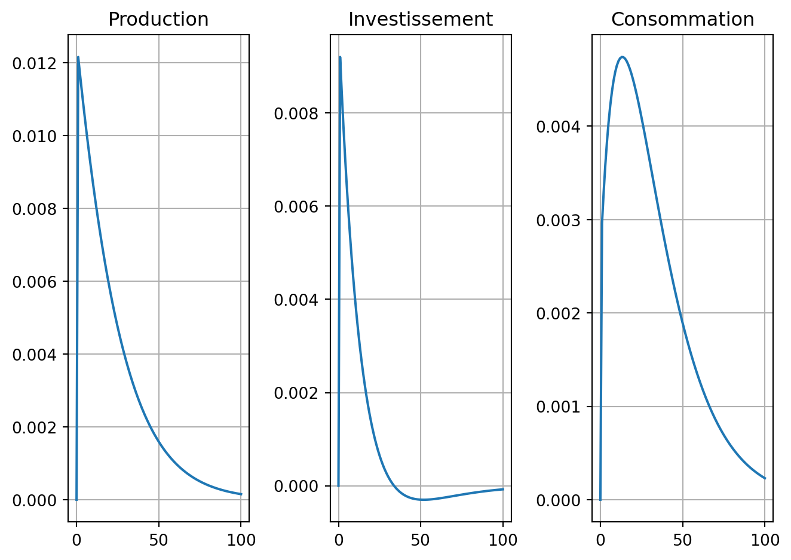

Code
from dyno import dynareCycles et fluctuations - AE2E6
Téléchargez le fichier mod rbc.
from dyno import dynareOuvrez le modèle RBC et résolvez-le. Corrigez les erreurs du fichier mod s’il y en a.
Il y a plusieurs choses à corriger dans le fichier mod :
^ à la fin de la ligne.k par k(-1).steady; avant check; pour recalculer l’état stationnaire.stoch_simul; pour calculer la solution du modèle. Notons que le mode émulation dynare, accepte l’option periods=100 pour changer l’horizon de simulation.report = dynare("rbc_fixed.mod")(si besoin, téléchargez le modèle corrigé ici )
Inspectez les différents éléments de la solution (règle de décision, moments inconditionnels, simulations).
Ces éléments sont présents dans le rapport de la question précédente. On peut aussi y accéder en inspectant l’objet renvoyé par la fonction dynare.
report = dynare("rbc_fixed.mod")
# report. # inspectez l'objet report pour trouver les différents éléments de la solutionreport.eigenvalues # les 2n valeurs propres du système linéariséarray([0. , 0. , 0. , 0. , 0. ,
0. , 0.94190599, 0.95 , 1.07784475, inf,
inf, inf, inf, inf, inf,
inf])dr = report.solution.decision_rule # la solution
# c'est un AR1 (y_t = X y_{t-1} + Y epsilon_t) où la matrice de covariance de epsilon_t est donnée par \Sigma
print("X")
print(dr.X)
print("Y")
print(dr.X)
print("Σ")
print(dr.Σ)X
[[ 0. 0. 0. 0. 0.05239829 0.
0. 0.31241831]
[ 0. 0. 0. 0. -0.00443606 0.
0. 0.05550534]
[ 0. 0. 0. 0. 0.10260005 0.
0. 1.39474574]
[ 0. 0. 0. 0. -0.01107652 0.
0. 0.21166995]
[ 0. 0. 0. 0. 0.94190599 0.
0. 0.97134612]
[ 0. 0. 0. 0. -0.03309401 0.
0. 0.97134612]
[ 0. 0. 0. 0. 0.01930427 0.
0. 1.28376443]
[ 0. 0. 0. 0. 0. 0.
0. 0.95 ]]
Y
[[ 0. 0. 0. 0. 0.05239829 0.
0. 0.31241831]
[ 0. 0. 0. 0. -0.00443606 0.
0. 0.05550534]
[ 0. 0. 0. 0. 0.10260005 0.
0. 1.39474574]
[ 0. 0. 0. 0. -0.01107652 0.
0. 0.21166995]
[ 0. 0. 0. 0. 0.94190599 0.
0. 0.97134612]
[ 0. 0. 0. 0. -0.03309401 0.
0. 0.97134612]
[ 0. 0. 0. 0. 0.01930427 0.
0. 1.28376443]
[ 0. 0. 0. 0. 0. 0.
0. 0.95 ]]
Σ
[[8.1e-05]]# Moments
report.momentsarray([[ 7.34994996e-04, -3.97804289e-06, 1.99567669e-03,
4.20043588e-05, 9.91114604e-03, 3.66380874e-04,
1.10137587e-03, 6.75183687e-04],
[-3.97804289e-06, 1.58833385e-06, 4.16814376e-06,
5.08193552e-06, -1.42438499e-04, 2.03594471e-05,
1.63814042e-05, 1.45076835e-05],
[ 1.99567669e-03, 4.16814376e-06, 5.56173064e-03,
1.64776746e-04, 2.60626226e-02, 1.20826864e-03,
3.20394533e-03, 2.00679751e-03],
[ 4.20043588e-05, 5.08193552e-06, 1.64776746e-04,
2.03915578e-05, 2.65519257e-04, 9.66480158e-05,
1.38652375e-04, 1.00130058e-04],
[ 9.91114604e-03, -1.42438499e-04, 2.60626226e-02,
2.65519257e-04, 1.38680646e-01, 3.67429549e-03,
1.35854415e-02, 8.07530987e-03],
[ 3.66380874e-04, 2.03594471e-05, 1.20826864e-03,
9.66480158e-05, 3.67429549e-03, 5.01234087e-04,
8.67614961e-04, 5.95554103e-04],
[ 1.10137587e-03, 1.63814042e-05, 3.20394533e-03,
1.38652375e-04, 1.35854415e-02, 8.67614961e-04,
1.96899083e-03, 1.27073779e-03],
[ 6.75183687e-04, 1.45076835e-05, 2.00679751e-03,
1.00130058e-04, 8.07530987e-03, 5.95554103e-04,
1.27073779e-03, 8.30769231e-04]])Interprétez l’effet d’un choc de productivité. Comment dépend-il de la persistance du choc ?
On voit que le choc de productivité augmente immédiatement la produciton l’investissement et la consommation. On remarque que la consommation met plus de temps à attendre son maximum: dans les premières périodes,il faut en effet épargner pour pouvoir investir et profiter mieux du choc de la peristance du choc. Cela crée donc un arbitrage initial entre consommer le gain de productivité et l’investir pour en profiter plus dans le futur.
En changeant la valeur dans le modèle du taux de dépréciation du capital, on peut voir un changement dans le forme du profil de consommation.
# bonus:
# on peut utiliser directement l'objet report.simulation.irfs pour faire des graphiques personalisés
from matplotlib import pyplot as plt
sim = report.simulation['epsilon'] # il s'agit d'une dataframe normale
plt.subplot(131)
plt.plot(sim['y'])
plt.grid(True)
plt.title("Production")
plt.subplot(132)
plt.plot(sim['i'])
plt.grid(True)
plt.title("Investissement")
plt.subplot(133)
plt.plot(sim['c'])
plt.grid(True)
plt.title("Consommation")
plt.tight_layout()
Téléchargez les séries temporelles des États-Unis depuis la Banque mondiale pour : PIB réel, investissement, consommation, heures travaillées.
Utilisons le code suivant pour télécharger les données et les préparer pour l’analyse. Nous allons utiliser la bibliothèque dbnomics pour importer les données de l’OCDE (pour ça il suffit de trouver les identifiants des séries sur le site de DBNomics).
import matplotlib.pyplot as plt
import numpy as np
import pandas as pd
from dbnomics import fetch_series
from statsmodels.tsa.filters.hp_filter import hpfilterseries_ids = [
"OECD/QNA/USA.P5.LNBQRSA.Q", # investissement
"OECD/QNA/USA.B1_GS1.LNBQRSA.Q", # PIB
"OECD/QNA/USA.P3.LNBQRSA.Q", # consommation
]
frames = []
for sid in series_ids:
tmp = fetch_series(sid)[["period", "value"]].copy()
tmp["Subject"] = sid.split("/")[2].split(".")[1]
frames.append(tmp)
df_long = pd.concat(frames, ignore_index=True)# Ne garder que les données pertinentes, au format long.
df_long = df_long[["Subject", "period", "value"]]df = df_long.pivot(index="period", columns="Subject", values="value").reset_index()df = df.sort_values("period").dropna().reset_index(drop=True)df = df.rename(
columns={
"period": "period",
"P5": "investment",
"B1_GS1": "gdp",
"P3": "consumption",
}
)On peut maintenant tracer les séries temporelles:
fig, axes = plt.subplots(3, 1, figsize=(10, 8), sharex=True)
axes[0].plot(df["period"], df["investment"], label="investment")
axes[0].legend()
axes[1].plot(df["period"], df["gdp"], label="gdp")
axes[1].legend()
axes[2].plot(df["period"], df["consumption"], label="consumption")
axes[2].legend()
plt.tight_layout()
plt.show()
Détrendez toutes les séries.
# Détrender la série de consommation.
series = df["consumption"]
_, trend = hpfilter(series, lamb=1600)
cycle = (series - trend) / trend
df["consumption_trend"] = trend
df["consumption_cycle"] = cyclefig, axes = plt.subplots(1, 2, figsize=(10, 4))
axes[0].plot(series.values, label="consumption")
axes[0].plot(trend.values, label="trend")
axes[0].set_title("consommation")
axes[0].legend()
axes[1].plot(cycle.values)
axes[1].set_title("consommation (cycle)")
plt.tight_layout()
plt.show()
# Détrender le PIB.
series = df["gdp"]
_, trend = hpfilter(series, lamb=1600)
cycle = (series - trend) / trend
df["gdp_trend"] = trend
df["gdp_cycle"] = cycle# Détrender la série d'investissement.
series = df["investment"]
_, trend = hpfilter(series, lamb=1600)
cycle = (series - trend) / trend
df["investment_trend"] = trend
df["investment_cycle"] = cycleCalculez les corrélations entre les séries détrendées. Calculez les ratios \(\frac{\sigma(investment)}{\sigma(gdp)}\) et \(\frac{\sigma (consumption)}{\sigma (gdp)}\). Comparez avec le modèle RBC et commentez.
# Ne garder que la partie pertinente du DataFrame.
relevant_df = df[["gdp_cycle", "investment_cycle", "consumption_cycle"]]# Convertir le dataframe en matrice NumPy.
mat = relevant_df.to_numpy()relevant_df.corr()| Subject | gdp_cycle | investment_cycle | consumption_cycle |
|---|---|---|---|
| Subject | |||
| gdp_cycle | 1.000000 | 0.909062 | 0.850059 |
| investment_cycle | 0.909062 | 1.000000 | 0.650094 |
| consumption_cycle | 0.850059 | 0.650094 | 1.000000 |
std_y = relevant_df["gdp_cycle"].std()
std_i = relevant_df["investment_cycle"].std()
std_c = relevant_df["consumption_cycle"].std()print("Ratio de volatilité empiriques")
print(f"sigma(i)/sigma(y) : {std_i/std_y}")
print(f"sigma(c)/sigma(y) : {std_c/std_y}")Ratio de volatilité empiriques
sigma(i)/sigma(y) : 3.320828267976935
sigma(c)/sigma(y) : 0.6950802322322035On peux calculer l’équivalent des ces ratios dans le modèle, en calculant les volatilités conditionnelles (en log)
dr = report.solution.decision_rule
Σ0 = dr.Y @ dr.Σ @ dr.Y.T # volatilité conditionelle
x = dr.x0 # steady-state
std_model = np.diag(Σ0) / x # volatilités conditionnelles en en log
variable_names = dr.symbols['endogenous']std_y_model = std_model[variable_names.index('y')]
std_i_model = std_model[variable_names.index('i')]
std_c_model = std_model[variable_names.index('c')]std_y_model = std_model[variable_names.index('y')]
std_i_model = std_model[variable_names.index('i')]
std_c_model = std_model[variable_names.index('c')]print("Ratio de volatilité selon le modèle")
print(f"sigma(i)/sigma(y) : {std_i_model/std_y_model}")
print(f"sigma(c)/sigma(y) : {std_c_model/std_y_model}")Ratio de volatilité selon le modèle
sigma(i)/sigma(y) : 2.7916208858251723
sigma(c)/sigma(y) : 0.07450376798239144Dans le modèle comme dans les donées l’investissment est environ trois fois plus volatile que la consommation. En revanche, la consommation y est nettement moins volatile. C’est peut¼etre du à la plage des données différente de celle utilisée pour calibrée le modèle RBC classique.